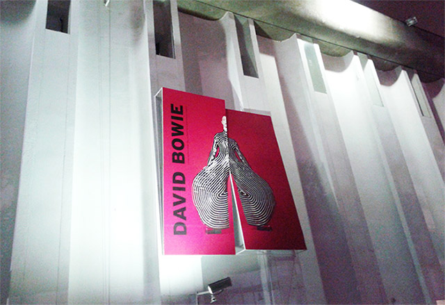
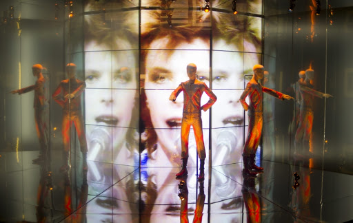
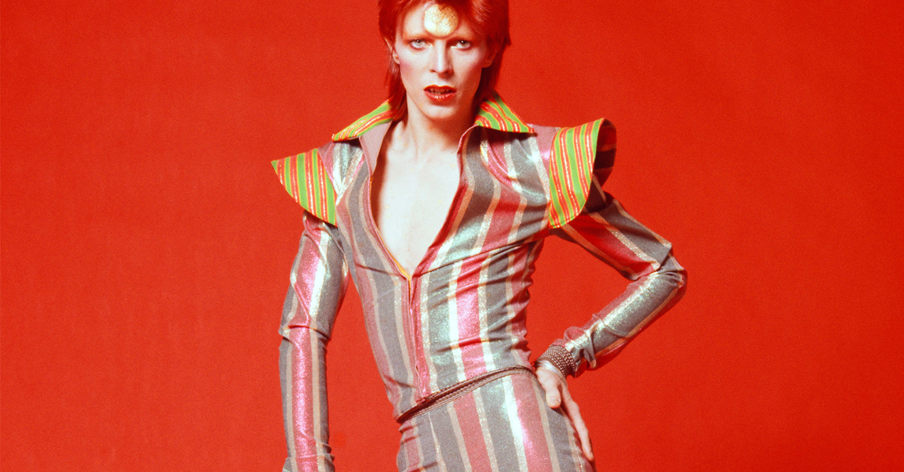

Sou uma pessoa de gostos muito variados (por vezes duvidosos), por isso foi difícil encontrar um tema pra falar hoje, mas me lembrei do que foi provavelmente a melhor exposição que já vi, a de David Bowie, no MIS SP!
A exposição foi tão boa que que não fui uma, nem duas, mas 3 VEZES, e a cada visita me encantava com um novo detalhe, um vídeo que não prestei tanta atenção de primeira, um manuscrito, enfim, uma infinidade de perspectivas que puderam ser exploradas sobre seu trabalho, desde músicas, vieoclipes, filmes, figurinos, até objetos pessoais e referências mais inusitadas como o expressionismo alemão e o Kabuki, o movimento do teatro japonês.
Eu levaria horas e horas pra me recordar de tudo o que vi, o que senti e o que mais amei nessa exposição, especialmente porque esse evento veio de encontro com minha admiração pelo artista que estava apenas começando, por sua influência em diversas áreas como a música, a moda, o cinema, estilo de vida, críticas a muitos tabus da época, trazendo assuntos muito relevantes hoje em dia como a sexualidade e a identidade, o que torna difícil encontrar um movimento artístico contemporâneo que não tenha influência de Ziggy Stardust, Aladin Sane, o homem de mil faces e alter egos, sua influência me traz conforto aqui e agora em me expressar sem medo de mudar, assim como enxergar a pluralidade humana como ela é: natural.
